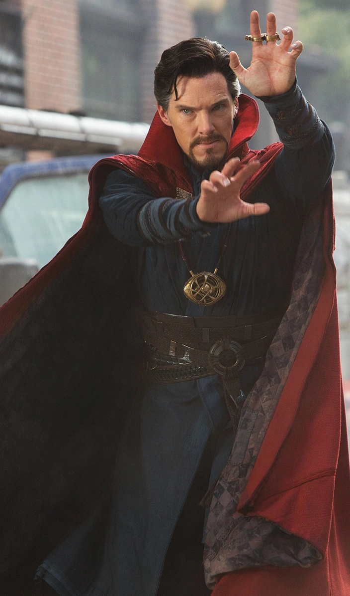

Zirnekļcilvēks
Zirnekļcilvēks
Kapteinis Amerika ir supervaronis, kas parādās Marvel komiksu grāmatās un vairākās filmās. Kapteiņa Amerika īstais vārds ir Stīvs Rodžerss, kurš bija slims, jauns vīrs, kurš tika padarīts par superkareivi, lai palīdzētu amerikāņiem 2. pasaules karā pret Ass valstīm. Viņš valkā tērpu, kurš ir ASV karoga krāsās un lieto neiznīcināmu metamo vairogu. Filmā "Kapteinis Amerika: Pirmais atriebējs", tās turpinājumā, kā arī filmā "Atriebēji", Kapteini Ameriku tēlo Kriss Evanss.
Dzelzsvīrs ir supervaronis Marvel komiksos, kuru radījis rakstnieks Stens Lī (Stan Lee). Personāžs pirmo reizi parādījās Tales of Suspense 39. numurā, kas iznāca 1963. gada martā. Dzelzs vīrs ir Tonija Stārka slepenā identitāte. Dzelzs vīra tēls ir izmantots filmās, komiksos, multiplikācijas filmās un datorspēlēs. Filmās viņu attēlo amerikāņu aktieris Roberts Daunijs.
Zirnekļcilvēks
Zirnekļcilvēks jeb Pīters Bendžamins Pārkers ir supervaronis Marvel komiksos, kuru radījuši mākslinieks Stīvs Ditko un rakstnieks Stens Lī. Personāžs pirmo reizi parādījās Amazing Fantasy 15. numurā, kas iznāca 1962. gada augustā. Zirnekļcilvēks ir Pītera Pārkera slepenā identitāte.
ASV supervaroņu filma, kas balstīta uz Marvel Comics supervaroņu komandas Atriebēji piedzīvojumiem. Filmu producē Marvel Studios un izplata Walt Disney Studios Motion Pictures.Galvenās lomas atveido Roberts Daunijs jaunākais, Kriss Evanss, Marks Rafalo, Kriss Hemsvorts, Skārleta Johansone, Džeremijs Renners, Dons Čīdls, Pols Rads, Bri Lārsone, Karena Gillana, Danai Gurira, Bredlijs Kūpers un Džošs Brolins.
Vanda MaximoffVanda Maksimofa ir dzimusi Sokovijā, kur uzauga kopā ar savu dvīņubrāli Pjetro. Dzimusi ar latentu mītisku spēju izmantot haosa maģiju, viņa attīstīja naidu pret Toniju Stārku un izraisīja pret Ameriku vērstus protestus pēc tam, kad Novigradas sprādzieni nogalināja viņas vecākus. Gadiem vēlāk, cenšoties palīdzēt iztīrīt savu valsti no strīdiem, dvīņi pievienojās HYDRA un piekrita iziet eksperimentus ar Scepteru barona Strikera uzraudzībā, lai Prāta akmens modinātu un pastiprinātu Vandas spēkus.
 Doktors Streindžs
talantīgs neiroķirurgs doktors Stīvens Streindžs, kuram pēc traģiskās autoavārijas ir jānoliek ego malā un jāapgūst slēptās mistikas un alternatīvo dimensiju pasaules noslēpumi. Doktoram Streindžam, kas atrodas Ņujorkas Griničas ciematā, ir jādarbojas kā starpniekam starp reālo pasauli un to, kas atrodas ārpus tās, izmantojot plašu metafizisko spēju un artefaktu klāstu, lai aizsargātu Marvel kinematogrāfisko Visumu. — Brīnums
Džeims BukhanansDžeimss Bukhanans "Bucky" Barnes Jr. ir izdomāts varonis, kas parādās amerikāņu komiksu grāmatās, kuras izdevusi izdevniecība Marvel komikss. Sākotnēji šo tēlu iepazīstināja ar kapteiņa Amerikas palīgu, to veidoja Džo Saimons un Džeks Kirbijs, un tas pirmo reizi parādījās filmā "Kapteinis Amerika"